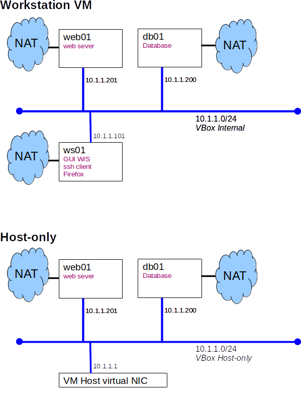

Lab Environment
Students are responsible for provisioning and maintaining their own lab environments.
Requirements
- Hardware:
- run a minimum of 4 Linux VMs concurrently
- store a minimum of 5 Linux VM images
- Linux VM:
- 2 GB RAM
- 1 VCPU (2 recommended)
- 18 GB Virtual disk (average 3 GB physical disk used per VM)
- 2 NIC
- NAT
- required for installation of packages and container images
- Host-only or Internal
- O/S:
- Debian 12, bookwork, is recommended
- Any modern Linux distro should work, if in doubt ask your instructor
- Software:
- Apache web server
- Mysql/Mariadb database server
- Docker
Reference VM
A bookworm appliance is supplied.
Deployment Diagrams
